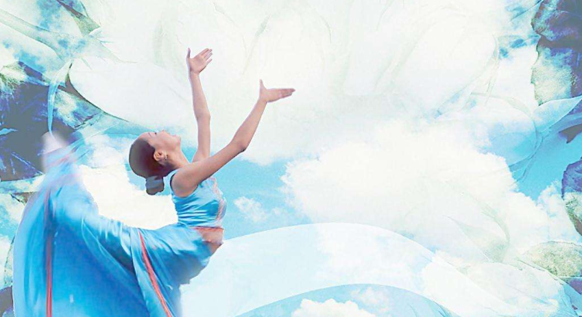

如何根据肤色正确搭配
2017.6.8 炎热之夏
INTRODUCTION/爱搭介绍
颜色分为冷、暖两大色系，暖色系中又分为春秋两组色调，冷色系中分为夏、冬两组色调。乍一看四组色群没有太大的区别，赤、橙、黄、绿、青、蓝、紫几乎都有，细看呢又有所区别。它们的区别就在于各组的色调不同。之所以把这四组色调用春、夏、秋、冬来命名，是因为它们的色彩特征与大自然中四季的色彩特征十分接近。
比如春的这组色群仿佛春天的花园里桃红柳绿的景象，秋天的这组色群就好像秋季的原野一片金黄的丰收景象，夏天的这组色群会让人联想到夏季的海边，水天一色的感觉，而冬天的这组色群则让人联想到白雪皑皑的冬季，翠绿的圣诞树挂着颜色鲜艳的小礼物的情景。
那么，这四组色调与我们又有什么关系呢？因为我们每个人的色彩属性也不一样。每个人的肤色、头发色、瞳孔的颜色、嘴唇的颜色，甚至笑起来脸上的红晕都是不同的，这些就是每个人与生俱来的色特征，被称为你的色彩属性。色彩顾问要做的就是在这里的四组色群中，找出与自己的自然色彩属性相协调的色彩群，那么一切用色包括化妆用色、服饰用色甚至居室、周边环境用色都可以统一到同一组色调中了

MORE/更多